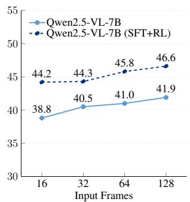

ICML 2026 Spotlight · 扫读 · 2026-06-06
VideoKR：视频 foundation models 的表征评估不能只看短视频 caption/VQA；VideoKR 可作为扫读资源
用 human-in-the-loop、skill-oriented generation 让问题更依赖连续视频理解和知识推理，而不是单帧/text shortcut。
编号2606.05259
优先级扫读
类别ICML 2026 Spotlight
会议arXiv + ICML 2026 Spotlight
方法构建 315K video reasoning examples、145K CC-licensed expert-domain videos，并提供 VideoKR-Eval。
来源arXiv / OpenReview
先说结论。视频 foundation models 的表征评估不能只看短视频 caption/VQA；VideoKR 可作为扫读资源。 用 human-in-the-loop、skill-oriented generation 让问题更依赖连续视频理解和知识推理，而不是单帧/text shortcut。


核心问题
视频 foundation models 的表征评估不能只看短视频 caption/VQA；VideoKR 可作为扫读资源。
方法拆解
构建 315K video reasoning examples、145K CC-licensed expert-domain videos，并提供 VideoKR-Eval。
主要贡献
用 human-in-the-loop、skill-oriented generation 让问题更依赖连续视频理解和知识推理，而不是单帧/text shortcut。
实验看点
摘要称 SFT -> GRPO pipeline 下优于 prior video reasoning post-training approaches。
局限与读法
数据/后训练工作，不是视觉自监督目标；CoT/rationale 构造成本和 domain coverage 需要关注。